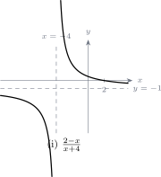

9.4 Histograms
A histogram displays a frequency distribution as a set of rectangles, one per class, drawn side by side with no gaps between them.
Note 9.11. Three points govern the drawing.
- The vertical sides of the rectangles stand at the class boundaries, which is why there are no gaps.
- If the smallest observation is far from zero, a break symbol is put on the horizontal axis rather than drawing a long empty stretch.
- The vertical axis is frequency density, not frequency: \[\text {frequency density}=\frac {\text {frequency}}{\text {class width}}.\]
Note 9.12. It is the area of each rectangle that represents its frequency, not its height. When all classes have the same width the two amount to the same thing and the axis may be labelled frequency. When widths differ they do not, and plotting raw frequency makes a wide class look far more important than it is.
Example 9.13. The table below gives the ages of \(144\) patients seen at a rural health post in one week. Construct a histogram.
| Age, \(x\) years | \(0\leq x<5\) | \(5\leq x<15\) | \(15\leq x<25\) | \(25\leq x<45\) | \(45\leq x<65\) | \(65\leq x<85\) |
| Frequency | 18 | 22 | 30 | 48 | 20 | 6 |
Solution. Step 1 — extend the table. The classes have different widths, so the frequency density must be worked out for each.
| Age, \(x\) years | Class width | Frequency | Frequency density |
| \(0\leq x<5\) | 5 | 18 | \(18\div 5=3.6\) |
| \(5\leq x<15\) | 10 | 22 | \(22\div 10=2.2\) |
| \(15\leq x<25\) | 10 | 30 | \(30\div 10=3.0\) |
| \(25\leq x<45\) | 20 | 48 | \(48\div 20=2.4\) |
| \(45\leq x<65\) | 20 | 20 | \(20\div 20=1.0\) |
| \(65\leq x<85\) | 20 | 6 | \(6\div 20=0.3\) |
Step 2 — draw the rectangles against frequency density.

9.4.1 Modal class
Definition 9.14. The modal class of a grouped distribution is the class with the greatest frequency density — the one represented by the tallest bar.
In the example above the tallest bar is \(0\leq x<5\), with a density of \(3.6\). That is the modal class.
Note 9.15. The class \(25\leq x<45\) contains \(48\) patients, more than any other, yet it is not the modal class. Its class is four times as wide, so its patients are spread thin. Concentration, not total count, is what the modal class identifies. Where all the classes have equal widths this distinction disappears and the largest frequency does give the modal class.